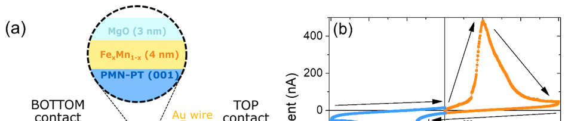
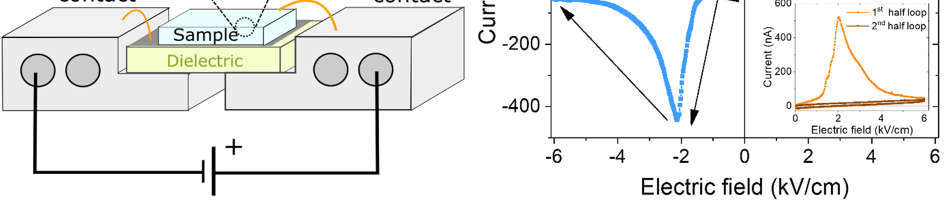
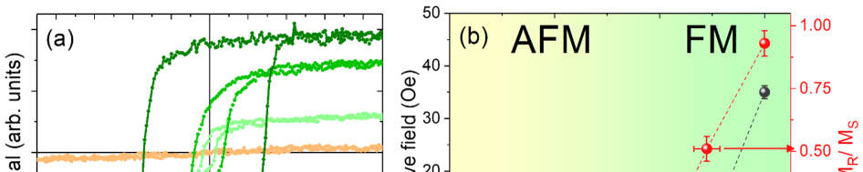
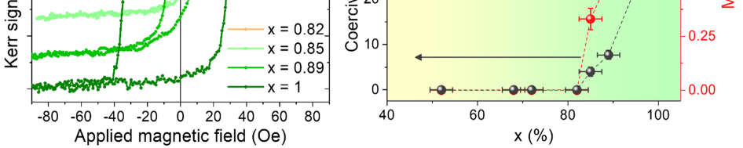
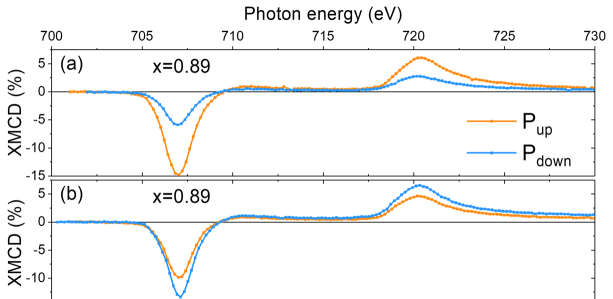
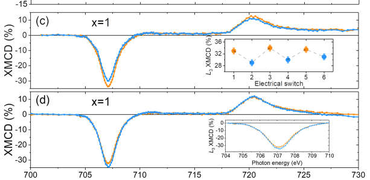
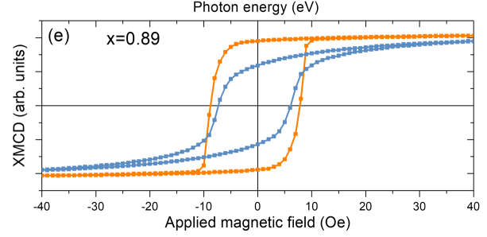
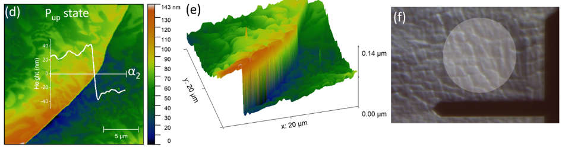
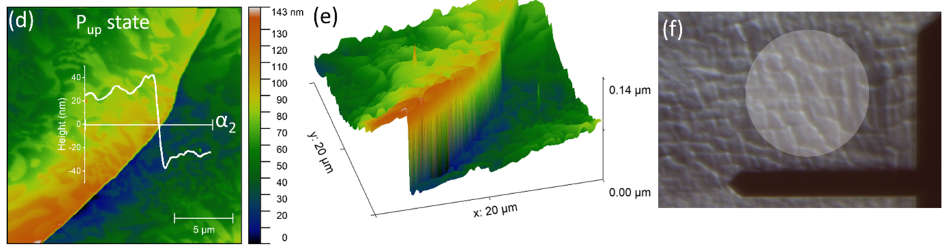

morphology
Giovanni Vinai,*
,†
Federico Motti,
†
Valentina Bonanni,
†,||
Damiano Cassese,
‡
Stefano Prato,
‡
Giorgio Rossi,
†,||
Giancarlo Panaccione,
†
Piero Torelli*
,†
†Laboratorio TASC, IOM-CNR, S.S. 14 km 163.5, Basovizza, I-34149 Trieste, Italy
||Department of Physics, Università degli Studi di Milano, Via Celoria 16, I-20133 Milano, Italy
‡ A.P.E. Research Srl, AREA Science Park, Basovizza, Trieste, Italy
*Correspondence to: vinai@iom.cnr.it, piero.torelli@elettra.eu
KEYWORDS: multiferroic heterostructures, electrical switch, morphological effects,
magnetoelectric coupling
Converse magnetoelectric coupling in artificial multiferroics is generally modelled through three
possible mechanisms: charge transfer, strain mediated or ion migration. Here we demonstrate a
novel and highly reliable approach, where electrically controlled morphological modifications
control the ferromagnetic response of a magnetoelectric heterostructure, specifically Fe
x
Mn
1-x
ferromagnetic films on ferroelectric PMN-PT (001) substrates. The ferroelectric PMN-PT
substrates present, in correspondence to electrical switching, fully reversible morphological
changes at the surface, to which correspond reproducible modifications of the ferromagnetic
Tailoring ferromagnetism through electrically
controlled
ABSTRACT
response of the Fe
x
Mn
1-x
films. Topographic analysis by atomic force microscopy shows the
formation of surface cracks after application of a positive electric field up to 6 kV/cm, which
disappear after application of negative voltage of the same amplitude. In-operando x-ray magnetic
circular dichroic spectroscopy at Fe edge in Fe
x
Mn
1-x
layers shows local variations of dichroic
signal up to a factor 2.5 as a function of the electrically-driven morphological state. These findings
highlight the role of morphology and surface topography as a key aspect in magnetoelectric
coupling, whose proof of electrically reversible modification of the magnetic response adds a new
possibility in the design of multiferroic heterostructures with electrically controlled functionalities.
MAIN TEXT
In recent years, the possibility of controlling the magnetization of a thin film with an electric
field has driven a tremendous research effort.
1–8
Unfortunately, the materials that display a natural
magnetoelectric coupling, known as multiferroics,
9–11
are scarce in nature and generally display
weak ferromagnetic response.
7,8,12
The absence of bulk multiferroics with the desired properties
has pushed towards the investigation of heterostructures in which two components with different
ferroic orders are coupled through an interface to obtain enhanced performances.
The most
typical example of this process is represented by ferromagnetic films deposited onto ferroelectric
substrates to obtain high magnetoelectric coupling coefficients.
13–31
Until now this path has proven
to be promising, leading to the discovery of systems with very high magnetoelectric coupling
coefficient and of new effects such as electrically driven magnetic phase transitions. Three main
mechanisms are reported in literature as responsible of the interfacial magnetoelectric coupling:
charge accumulation/depletion at the interface, strain-mediated effects and ion migration.
1–5
Such
magnetoelectric interactions can be maximized by exploiting specific characteristics of the
materials, such as strongly correlated magnetic oxides,
13,15,28,32,33
mixed-phase metallic alloys,
16–
structural transitions
20–25
or nanostructuration.
26,27,34,35
In this contest, topographical studies of
the heterostructure are relatively rare,
27,28,35–38
despite the great variety of materials used in both
ferroelectric and ferromagnetic layers. More importantly, they do not take into account possible
modifications of the morphology after ferroelectric transitions.
Here we present evidence of a new mechanism responsible of converse magnetoelectric
coupling. By combining x-ray magnetic dichroism (XMCD) and atomic force microscopy, we
observed a correlation between electrically induced mesoscopic morphological transitions and
magnetic response. Specifically, samples showed the appearance and annihilation of surface cracks
by electrically switching the ferroelectric state of the substrate; the two morphological states
display significantly different magnetic properties, which are fully reversible after ferroelectric
switch.
(a) Experimental setup for sample electrical switching and characterization. In the inset,
schematic of the sample stack. (b) I(E) curve with PMN-PT electrical switching under both
positive and negative applied bias. In the inset, I(E) curves before and after positive electrical
switching.
Figure 1.

image.3.1[454*97]

image.3.2[454*97]
To this scope a series of 4 nm thick Fe
x
Mn
1-x
films were deposited on 0.6Pb(Mg
1/3
Nb
2/3
)O
–
0.4PbTiO
(PMN-PT) (001) single crystal substrates by molecular beam epitaxy (MBE) via co-
deposition from Fe and Mn evaporators. FeMn thin films were then capped by 3 nm MgO
protecting layer (Figure 1); x ratio ranged from 0.5 to 1 in order explore the magnetic phase
diagram in both the antiferromagnetic (AFM) and ferromagnetic (FM) phases.
39–41
This
information is important because in the proximity of the critical point (i.e. the AFM to FM
transition) the weak ferromagnetic interactions lead to a maximization of the magnetoelectric
coupling.
17–19
A 4 nm thickness was chosen in order to be sensitive to the interfacial coupling with
PMN-PT substrate,
while maintaining a robust ferromagnetic response at room temperature.
In order to be able to measure the magnetic, chemical and topographic characteristics of FeMn
thin films as a function of PMN-PT electrical switch state, we used a specific set of sample holders,
as shown in Figure 1a. The sample is placed on a dielectric substrate, with conductive silver paint
contacting the bottom part of the sample to one of the two extremities of the sample holder (bottom
contact). The sample surface is then electrically contacted to the opposite contact (top contact)
through a gold wire. In this way a capacitor structure is realized in which the FeMn film acts as
top contact and the silver paint layer as bottom contact. The two contacts are then connected to a
picoammeter/voltage source, which allows applying an out-of-plane electric voltage through the
thickness of the sample up to ± 300 V (6 kV/cm), thus reversing the electrical polarization of the
substrate without removing the sample from the measurement position. Figure 1b shows an
example of an I(E) curve of MgO/Fe
Mn
/PMN-PT sample. The electric field is applied through
the thickness of the sample, i.e. through the 0.5 mm thickness of the PMN-PT(001) substrate,
linearly increasing the value from 0 to 6 kV/cm, then to -6 kV/cm, and finally back to 0. When the
positive bias (P
up
) is applied to the top contact (orange curve in Figure 1b), a peak of current
passing through the sample is measured in correspondence of the electrical switching of the
substrate; the same is observed in case of negative polarization (P
down
, blue curve). The transition
takes place at similar absolute values, i.e. ~ ± 2 kV/cm, for both polarities on all samples with fully
reproducible and stable curves, with no sign of sample deterioration after several switches,
consistently with what reported for similar substrates.
30,43
If after one electrical switching the same
half electric loop is repeated afterwards (inset of Figure 1b), no current peak is detected, sign of a
full electric polarization retention. The electrical switch proved to be extremely stable in time:
repeating the same half electric loop several hours after the switch gave no sign of electrical peak.
This demonstrates that the time stability of the PMN-PT substrate largely exceeds the XMCD and
atomic force microscopy measuring time.
(a) MOKE hysteresis loop for x ratios going from 0.82 to 1. (b) Evolution of magnetic
coercive field (black) and remanent magnetization (red) as a function of Fe x ratio in Fe
x
Mn
1-x
thin
film, going from AFM to FM regimes.
To define the x ratio at which the AFM/FM transition takes place, we carried out Kerr effect
measurements on different samples. Figure 2 shows the evolution of magnetic hysteresis loops as
a function of Fe
x
Mn
1-x
x ratio for pristine substrates. For x ≤ 0.82, no signs of hysteresis is present
(Figure 2a), indicating an overall AFM regime of the FeMn layer. For larger x value hysteresis
Figure 2.

image.5.1[454*90]

image.5.2[454*90]
appeared (FM regime), with increasing magnetic coercivity and remanence in correspondence of
larger Fe concentrations. The evolution of these two parameters is plotted in Figure 2b. Such value
of AFM/FM transition (around 0.85) is in good agreement with what reported on similar
systems.
41,44
XMCD at Fe
L
2,3
edges for x = 0.89 (a-b) and x = 1 (c-d) after positive P
up
(orange) and
negative P
down
(blue) electrical switches. In the inset of (c), Fe
L
edge values after subsequent
electrical switches; (e) XMCD hysteresis loop at Fe edge for x=0.89.
Figure 3.

image.6.1[294*143]

image.6.2[294*143]

image.6.3[294*143]
In order to investigate the effects of converse magnetoelectric coupling, we took x-ray absorption
spectroscopy (XAS) and x-ray magnetic circular dichroism (XMCD) measurements of Fe
x
Mn
1-x
samples at different relative concentrations after both electrical switches. Fe and Mn
L
2,3
edges
were probed at the APE-HE beamline of the Elettra synchrotron radiation facility in Trieste.
All
measurements were performed at room temperature, in total electron yield (TEY) mode, by
recording the drain current through the gold wire of the top contact (Figure 1a), measuring at
remanence after in-plane magnetic saturation of the sample. From the chemical point of view, XAS
spectra probed that all samples had purely metallic Fe and Mn edges, with relative signal intensities
in agreement with the stoichiometry of the samples. The XAS spectra maintained the pure metallic
shape in all electrical states of the PMN-PT substrate, ruling out any oxidation during growth or
after air exposure and, more interestingly, any ion migration from/to the substrate during the
ferroelectric cycles. In-operando XAS and XMCD spectra were taken at zero voltage, after setting
the polarization to the state P
up
or P
down
.
Figure 3 shows the evolution of XMCD spectra as a function of electric polarization at Fe
L
2,3
edges for x = 0.89 and x = 1 in different points of the samples. Firstly, in the pristine Fe sample,
we measured
L
XMCD intensity of 32 ± 1%, in agreement with what reported in literature for
pure Fe thin films,
46,47
proving a full magnetization of the pure Fe layer in our measurement
conditions. The presence of small percentages of Mn gradually reduces the intensity of the dichroic
signal at Fe edge until samples with x ≤ 82%, which showed no dichroic signal, in agreement with
what observed by Kerr effect (Figure 1b). Quite interestingly, Fe and Mn dichroic signals showed
an antiparallel alignment in the FM regime, with Mn XMCD having a much smaller signal
compared to the Fe one. Thus for high Fe concentrations we can consider the Mn atom acting as
an impurity in the ferromagnetic host, reducing Fe magnetic moment. The reduction of the Fe
dichroic signal for increasing Mn concentrations is in agreement with what reported for FeMn thin
films on MgO,
where on the other hand Mn is reported to have weak parallel alignment.
44,48
The
Fe
x
Mn
1-x
phase diagram is complex and very sensitive to chemical and structural environment,
49,50
thus the growth on PMN-PT may be at the origin of such AFM coupling between Fe and Mn in
the FM regime. However, the precise determination of the complex magnetic structure of the FeMn
around the critical point goes beyond the scope of this paper; from here on, we will therefore focus
on the evolution of the Fe FM response as a function of the sample electric switch.
Figure 3a-b show the Fe dichroic spectra in two different zones of the Fe
Mn
sample, after in-
situ electrical switching. We can clearly see how, according to the chosen point of measure, passing
from P
down
to P
up
states can lead either to a huge increase (Figure 3a) or a clear reduction (Figure
3c) of the dichroic signal. In one of the measurement points (Figure 3a) the electrical switch led to
a giant variation of the dichroic signal of a factor 2.5. To such variation of XMCD at remanence,
it corresponds a modification of the whole hysteresis loop, as shown in Figure 3e. The changes of
both coercive field and remanent magnetization are signs of a possible modification of the
anisotropic axis induced by the change of polarization state.
Such findings are extremely surprising for two main reasons: (a) the magnitude of the observed
effects is huge, arriving to modify the XMCD of 250% in the best case; (b) the variations appear
to be sensitive to the zone probed during the measurement, whose area is ~150 µm
, rather than to
the ferroelectric state of the substrate. The latter observation implies that the models generally used
for explaining converse magnetoelectric coupling do not apply in this case. Firstly, charge
screening length in the case of metallic layers is confined at the first atomic layer at the interface,
while our sample thickness of 4 nm overpasses purely interfacial effects; moreover, charging
effects are expected to be uniform in case of epitaxial interface. Regarding ion migration, its
presence would entail variations on the chemical composition of the metallic layer,
52,53
which are
not detected by XAS spectra after electrical switches at either Fe or Mn edges. Finally, since the
electric poling is out of plane, purely strain-driven effects would lead to a symmetric variation
after complete polarization,
16,29,31
which is clearly not the case for our system. This last point
highlights a very intriguing aspect of the observed effect: no known magnetoelectric coupling
mechanism is able to explain a difference in the sign of the coupling through the surface of the
same sample.
In order to verify if such a behavior is characteristic of the proximity of FeMn layer to the
AFM/FM transition, we repeated local in-operando XMCD investigations on the pure iron sample.
Whereas in the pristine case the Fe film showed full magnetization, the effect of electrically
polarizing the sample led to local variations of the dichroic signal intensity, similarly to what
observed in the case of x = 0.89, but with reduced intensity. Indeed, we measured variations of
L
XMCD intensity which span from an increase of a factor 1.12 ± 0.03 passing from P
down
to P
up
states (Figure 3c), or a very small reduction (Figure 3d). Moreover, we observed a complete
reversibility of the magnetic response after different polarizations, as shown in the inset of Figure
3c. We attribute to the robustness of the ferromagnetism of a pure Fe layer (compared to the
Fe
Mn
layer close to the AFM/FM transition) the reason of the reduction of the observed effect;
however, the persistence of local variations of magnetoelectric coupling confirms that a new
coupling mechanism is acting in our system.
Atomic force microscopy topographic height images of a 20 x 20 μm
area of
MgO/Fe
0.85
Mn
0.15
/PMN-PT sample after negative (a,b) and positive (d,e) electrical switching. A
surface crack appears across the area; α
and α
show the topographic profiles in (a) and (d) scan
over the same line of the sample. (c) and (f) are pictures from optical microscope of sample surface
after negative (c) and positive (f) electrical switches. A tip width is used as size reference. Faded
circles sign XAS/XMCD probed area per measurement.
To fully characterize our system we therefore decided to measure the surface topography as a
function of the substrate polarization state; atomic force microscopy measurements were taken on
the samples as a function of the electrical switch. Figure 4 shows the topographic evolution in the
two different ferroelectric state P
down
and P
up
of PMN-PT substrate. In order to measure the
topographic variations of the sample, the sample was measured at zero voltage after a negative
(Figure 4a-c) and positive (Figure 4d-e) electrical switch, on the sample holder setup shown in
The PMN-PT(001) substrates present a rich surface morphology, which is transferred to the thin
layers deposited onto them. The surface is covered by island-like areas of different dimensions,
ranging from tens to fractions of μm width. The height of the islands (in green in Figures 4a and
d) with respect to the background (in blue) is of few nanometers. This can be observed from the
α
profile measured in Figure 4a, with height variations of the order of tens of nm in
on pristine PMN-PT(001) substrates, indicating that such morphology is not caused by a non-
homogeneous deposition of Fe
x
Mn
1-x
layer, but it is directly due to the PMN-PT(001) substrate.
In addition to such morphology, the sample presents a second mesoscopic morphological
feature, whose characteristics are sensitive to the electrical history of the sample. Indeed, Figure
4a presents a quite faint line crossing diagonally the scan from top right to bottom left, whose
depth is of the same order of magnitude of the island morphology, as it can be seen in the α
profile
line crossing it. On the contrary, after positive electrical switch the same line transforms into a
surface crack (see Figure 4d), whose height overpasses of a factor 10 the one present in the opposite
electrical state. Profile α
in Figure 4d, which crosses the same line as α
in Figure 4a, shows the
height of the surface crack that appeared after positive electrical switch. The amplitude of the
morphological variation can be appreciated from the 3D view of the topological scans of Figure
4b and 4e.
We measured similar formations of surface cracks in several parts of the surface, with
variations of heights as a function of electrical switch comparable with what shown in Figure 4.
These variations were even visible by the optical microscope of the atomic force microscopy
instrument. Figure 4c and f show the optical microscopy view of the surface after negative and
positive electrical switches respectively. A complete modification of the surface morphology takes
place all over the sample. Starting from the initial condition before biasing, the sample passes
through a negative electrical switch, which modifies the sample morphology into a “smoother”
one in correspondence to the negative current peak (Figure 4b). When the positive voltage is
applied, the morphology abruptly switches to a corrugated one (Figure 4e) in correspondence to
correspondence to the passages from green to blue areas. The same topography was also measured
the positive current peak. We repeated the electrical switches several times, observing that the
sample morphology reversibly passes from one to the other one. Surface cracks as those shown in
electrical transitions.
Such impressive electrically-driven morphological features are extremely intriguing from both
the ferroelectric and the magnetoelectric points of view. Regarding the former one, it is known
that ferroelectric/elastic materials tend to be fragile;
during ferroelectric transitions the crystal is
subject to huge strain across its thickness, which may lead to substrate breakdown.
Moreover,
cracks formed during cycling tend to expand after several repetitions.
56,57
In the case of PMN-PT,
electrical switching corresponds to a 109° rotation of the ferroelectric domains,
passing through
complex domain structures during polarization reversal.
Very recently, similar morphological
modifications have been reported by Liu
et al.
in the case of MnPt(35 nm)/PMN-PT(001)
heterostructures. In their work, they show how the cracks induce a variation of the resistance of
the metallic layer of several orders of magnitude as a function of the electrical switch, with
endurance and perfect reversibility for up to 10
cycles. The mechanism ruling the electrically-
induced morphological transition in the two cases is similar: the Fe
x
Mn
1-x
layer, as the MnPt of
Liu
et al.
,
acts as top electrode and follows the morphological variations of the substrate, which
transfers onto the magnetic layer its formation and annihilation of cracks. One remarkable aspect
present in both studies
is that the metallic layer completely recovers the electronic properties
(electrical in ref.44, magnetic in our case) with perfect reproducibility and remarkable endurance
after the morphological transitions.
This aspect leads to the consequences of the mesoscopic morphological transformations onto the
converse magnetoelectric coupling of our heterostructure. To be responsible of the observed
Figure 4d-f vanish into smooth profiles all over the surface, with no signs of fatigue after several
changes in the XMCD signal, the surface cracks must have a high spatial density. In figure 4c and
f, the grey circles show the dimension of the probed area during XMCD measurements. As it can
be clearly seen in the figures, such area is large enough to cover a large number of surface cracks,
i.e. the morphological state of two XMCD measurements is dramatically different on a large
portion of the probed area.
As known, local defects and dislocations play an important role in magnetism, acting either as
nucleation points for domain wall or at the opposite as pinning points during magnetization
reversal; at remanence, they can modify both the coercive field and the total magnetic moment by
locally creating non-uniform magnetization or spin glass states.
47,59
In our case, the ferroelectric
domain reversal leads to complex modifications across the thickness of the sample due to the
structural changes taking place during the polarization reversal. As shown in Figure 4, we have
observed that after positive polarization such processes lead to the formation of cracks, which
create areas of tens of μm
separated one from the other by vertical walls of almost a hundred nm
height. Despite the dimension of such areas is too large to allow single domain rotation during
magnetization reversal instead of domain wall nucleation and propagation,
cracks separate zones
which previously were magnetically connected. If in this condition the electrical polarization is
reversed with a negative electrical field, areas previously vertically separated return at similar
height because of the transition of surface cracks into smooth lines, recreating the magnetic
connections across it. As shown in Figure 3, the magnetic responses of the thin films are sensitive
to the morphological variations, recreating magnetic interactions along zones that were previously
magnetically uncorrelated. XMCD spectra were taken at remanence after magnetic in-plane
saturation, which implies that the modulations of dichroic signal intensity after electrically-driven
morphological transitions are due either to a variation of the magnetic anisotropy, i.e. of the
remanent magnetization, or to a change of the total magnetic moment, i.e of the net magnetization.
The reproducibility of the magnetic responses after morphological modifications shows that such
changes of the magnetic interactions can be reversibly broken and reformed, despite mechanical
fractures take place on the surface of the sample and across the FeMn thin film. Since the density
of cracks formed after electrical switch is randomly distributed over the sample surface, its effects
on the magnetic response varies randomly according to the probed zone. For this reason, the
amplitude of the converse magnetoelectric effect on a probed area is affected by the local
morphology, spreading from huge coupling effects to none.
These findings add a new player in the interfacial coupling of artificial heterostructures, whose
amplitude, as it is the case for our study, can overpass the one attributed to charge or strain effects.
Also for our case of study, we cannot exclude the presence and contribution of other coupling
mechanisms in our system. As previously stated, on one side charges are accumulated at the
interface with Fe
x
Mn
1-x
after the current peak measured in I(E) curves, and on the other one
polarization reversal of PMN-PT creates large strains at ferroelectric boundaries because of the
109° angle of polarization switching between domains. Ongoing studies of the relative weight of
these aspects are under investigation. Nonetheless, such effects do not explain the huge variations
of magnetoelectric response depending on the measurement zone on the sample, which arrive to
invert completely the observed effect, thus demonstrating the dominant role of the morphology in
this system. This new mechanism of electrically-induced variation of magnetic response offers a
wide range of possibilities through which the morphological driven magnetoelectric coupling
could be maximized, such as using magnetostrictive materials (FeGa or Ni) as a metallic layer or
patterning the ferroelectric substrate to gain control on the induced modifications.
In summary, we have reported how Fe
x
Mn
1-x
/PMN-PT samples experience electrically induced
reversible morphological changes, with the formation and annihilation of surface cracks of tens of
nm depth. Such morphological modifications of the substrate are transferred from the PMN-PT
substrate to the thin Fe
x
Mn
1-x
layer, leading to huge and reversible modifications of its
ferromagnetic response. These findings add a new degree of control of magnetism driven by an
electrical field and make surface morphology an additional important parameter that opens new
promising possibilities in the design of new multiferroic heterostructures with enhanced
performances.
Sample deposition
Fe
x
Mn
1-x
thin films of 4 nm thickness were deposited by MBE co-deposition from Fe and Mn
crucibles on (001)-oriented PMN-PT single crystal substrates (5 x 5 x 0.5 mm
) at room
temperature, with a base pressure of 1 x 10
mbar. x
ratio was modulated by varying the deposition
rates of the two evaporators, which were calibrated by quartz microbalance. Deposition rate was
fixed at 1.9 Å/min for Fe evaporator and ranged from 0.19 to 1.9 Å/min for Mn evaporator.
Samples were then capped by 3 nm thick MgO layer with 0.57 Å/min deposition rate. All substrates
were in pristine state during deposition. PMN-PT single crystal substrates were purchased from
SurfaceNet GmbH.
MOKE characterization
Longitudinal Kerr effect measurements were done at ambient pressure, room temperature
condition using a
s
-polarized blue laser (435 nm) and intensity modulation at 815 Hz. All
METHODS
measurements have been taken ex situ after MBE deposition. Laser spot size is about 500 μm
.
Coercive field is calculated as hysteresis loop half width at zero magnetization.
Electrical characterization
Electrical contacts onto FeMn film were made via contacting a gold wire on top of the surface and
using a conductive silver paint contact on the bottom part. The two electrically isolated contacts
of the sample holder were connected to a Keithley 6485 picoammeter /voltage source at room
temperature. Measurements were taken both in UHV conditions and in air, with no changes in the
electrical response. I(E) curves shown in the article were taken with a NPLC of 1.
Morphological characterization
Atomic force microscopy measurements were acquired by A100 microscope of A.P.E. Research.
Cantilevers with stiffness of 40 Nm and lenght of 125 micrometers were used.The sample was
measured at ambient pressure at zero voltage, after cycling the electric field to positive or negative
saturation using the sample holder connections in the measurement position. Tip was lifted during
the application of the bias to avoid surface damaging during the morphological transitions.
XAS/XMCD characterization
All measurements were performed at room temperature, in total electron yield (TEY) mode,
normalizing the intensity of the sample current to the incident photon flux current at each energy
value. Absorption spectra were taken in circular polarization, with the sample surface at 45° with
respect to the incident beam. In this condition, the footprint of the x ray on the sample surface
covers an area of ~150 µm
. XMCD spectra were recorded at remanence, alternating magnetic
field pulses of ±300 Oe in the surface plane at each energy point of the spectra, to saturate sample
magnetization. The spectra are presented normalizing to 1 the sum of the intensity of the
L
lines.
The difference between the two resulting curves gives the dichroic signal; XMCD signal expressed
in % takes into account the angle of 45°
between the photon angular momentum and the sample
magnetization, as well as the 75% circular polarization degree of light.
Giovanni Vinai
E-mail: vinai@iom.cnr.it
ORCID: https://orcid.org/0000-0003-4882-663X
Piero Torelli
E-mail: piero.torelli@elettra.eu
Author Contributions
The manuscript was written through contributions of all authors. All authors have given approval
to the final version of the manuscript.
Acknowledgments and fundings
This work has been performed in the framework of the nanoscience foundry and fine analysis
(NFFA-MIUR Italy Progetti Internazionali) project. We acknowledge Alessio Guerra for the video
editing of the supplementary information.
Corresponding Authors
1. Hu, J. M,
et al.
Multiferroic heterostructures integrating ferroelectric and magnetic
materials.
Adv. Mater.
28,
15 (2016).
2. Song, C.
et al.
Recent progress in voltage control of magnetism: Materials, mechanisms,
and performance.
Prog. Mater. Sci.
87,
33 (2017).
3. Fusil, S.
et al.
Magnetoelectric devices for spintronics.
Annu. Rev. Mater. Res.
44,
(2014).
4. Liu, M.
et al.
Voltage control of magnetism in multiferroic heterostructures and devices.
Philos. Trans. R. Soc. A
372,
20120439 (2014).
5. Matsukura, F.
et al.
Control of magnetism by electric fields.
Nat. Nanotechnol.
10,
(2015).
6. Béa, H.
et al.
Spintronics with multiferroics.
J. Phys. Condens. Matter
20,
434221 (2008).
7. Martin, L. W.
et al.
Multiferroics and magnetoelectrics: thin films and nanostructures.
J.
Phys. Condens. Matter
20,
434220 (2008).
8. Catalan, G.
et al.
Physics and applications of bismuth ferrite.
Adv. Mater.
21,
2463 (2009).
9. Hill, N. A. Why are there so few magnetic ferroelectrics?
J. Phys. Chem. B
104,
(2000).
10. Hill, N. A.
et al.
Why are there any magnetic ferroelectrics?
J. Magn. Magn. Mater.
242–
245,
976 (2002).
11. Eerenstein, W.
et al.
Multiferroic and magnetoelectric materials.
Nature
442,
759 (2006).
12. Vinai, G.
et al.
Unraveling the magnetic properties of BiFe
0.5
Cr
0.5
O
thin films.
APL Mater.
3,
116107 (2015).
13. Heidler, J.
et al.
Manipulating magnetism in La
0.7
Sr
0.3
MnO
via piezostrain.
Phys. Rev. B
91,
24406 (2015).
References
14. Moya, X.
et al.
Giant and reversible extrinsic magnetocaloric effects in La
0.7
Ca
0.3
MnO
films due to strain.
Nat. Mater.
12,
52 (2012).
15. Thiele, C.
et al.
Influence of strain on the magnetization and magnetoelectric effect in
La
0.7
A
0.3
MnO
/PMN-PT(001) (A=Sr,Ca).
Phys. Rev. B
75,
54408 (2007).
16. Lee, Y.
et al.
Large resistivity modulation in mixed-phase metallic systems.
Nat. Commun.
6,
5959 (2015).
17. Liu, Z. Q.
et al.
Full Electroresistance modulation in a mixed-phase metallic alloy.
Phys.
Rev. Lett.
116,
97203 (2016).
18. Cherifi, R. O.
et al.
Electric-field control of magnetic order above room temperature.
Nat.
Mater.
13,
345 (2014).
19. Phillips, L. C.
et al.
Local electrical control of magnetic order and orientation by ferroelastic
domain arrangements just above room temperature.
Sci. Rep.
5,
10026 (2015).
20. Vaz, C. A. F.
et al.
Magnetic anisotropy modulation of magnetite in Fe
O
/BaTiO
(100)
epitaxial structures.
Appl. Phys. Lett.
94,
22504 (2008).
21. Lahtinen, T. H. E
et al.
Temperature control of local magnetic anisotropy in multiferroic
CoFe/BaTiO
.
Appl. Phys. Lett.
102,
112406 (2013).
22. Lee, M. K.
et al.
Strain modification of epitaxial perovskite oxide thin films using structural
transitions of ferroelectric BaTiO₃ substrate.
Appl. Phys. Lett.
77,
3547 (2000).
23. Sahoo, S.
et al.
Ferroelectric control of magnetism in BaTiO
/Fe heterostructures via
interface strain coupling.
Phys. Rev. B
76,
92108 (2007).
24. Venkataiah, G.
et al.
Manipulation of magnetic coercivity of Fe film in Fe/BaTiO
heterostructure by electric field.
Appl. Phys. Lett.
99,
102506 (2011).
25. Eerenstein, W.
et al.
Giant sharp and persistent converse magnetoelectric effects in
multiferroic epitaxial heterostructures.
Nat. Mater.
6,
348 (2007).
26. Buzzi, M.
et al.
Single domain spin manipulation by electric fields in strain coupled artificial
multiferroic nanostructures.
Phys. Rev. Lett.
111,
27204 (2013).
27. Biswas, A. K.
et al.
Experimental demonstration of complete 180° reversal of magnetization
in isolated Co nanomagnets on a PMN-PT substrate with voltage generated strain.
Nano
Lett.
17,
3478 (2017).
28. Xue, X.
et al.
Discovery of enhanced magnetoelectric coupling through electric field control
of two-magnon scattering within distorted nanostructures.
ACS Nano
11,
9286 (2017).
29. Heidler, J.
et al.
Magnetoelectroelastic control of magnetism in an artificial multiferroic.
Phys. Rev. B
94,
14401 (2016).
30. Zhang, S.
et al.
Electric-field control of nonvolatile magnetization in
Co
Fe
B20/Pb(Mg
1/3
Nb
2/3
)
0.7
Ti
0.3
O
structure at room temperature.
Phys. Rev. Lett.
108,
137203 (2012).
31. Nan, T. X.
et al.
Voltage impulse induced bistable magnetization switching in multiferroic
heterostructures.
Appl. Phys. Lett.
100,
132409 (2012).
32. Bhattacharya, A.
et al.
Magnetic oxide heterostructures.
Annu. Rev. Mater. Res.
44,
(2014).
33. Moya, X.
et al.
Giant and reversible extrinsic magnetocaloric effects in La0.7Ca0.3MnO3
films due to strain.
Nat. Mater.
12,
52 (2012).
34. Vinai, G.
et al.
Giant magneto–electric coupling in 100 nm thick Co capped by ZnO
nanorods.
Nanoscale
10,
1326 (2018).
35. Gao, X.
et al.
Microstructure and properties of well-ordered multiferroic
Pb(Zr,Ti)O
/CoFe
O
nanocomposites.
ACS Nano
4,
1099 (2010).
36. Strelcov, E.
et al.
Constraining data mining with physical models: voltage- and oxygen
pressure-dependent transport in multiferroic nanostructures.
Nano Lett.
15,
6650 (2015).
37. Soni, R.
et al.
Giant electrode effect on tunnelling electroresistance in ferroelectric tunnel
junctions.
Nat. Commun.
5,
5414 (2014).
38. Hu, Z.
et al.
Non-volatile ferroelectric switching of ferromagnetic resonance in NiFe/PLZT
multiferroic thin film heterostructures.
Sci. Rep.
6,
32408 (2016).
39. Thamankar, R.
et al.
Structural and magnetic properties of ultrathin fcc Fe
x
Mn
1-x
films on
Cu(100).
Phys. Rev. B
69,
54411 (2004).
40. Endoh, Y.
et al.
Antiferromagnetism of γ iron manganes Alloys.
J. Phys. Soc. Japan
30,
1614 (1971).
41. Idzerda, Y. U.
et al.
Moment mapping of body-centered-cubic Fe
x
Mn
1-x
alloy films on
MgO(001).
J. Appl. Phys.
117,
17A721 (2015).
42. Xu, Y. B.
et al.
Evolution of the ferromagnetic phase of ultrathin Fe films grown on GaAs
(100)-4 X 6.
Phys. Rev. B
58,
890 (1998).
43. Liu, Z.
et al.
Electrically reversible cracks in an intermetallic film controlled by an electric
field.
Nat. Commun.
9,
41 (2018).
44. Bhatkar, H.
et al.
Elemental moment variation of bcc Fe
x
Mn
-
x
on MgO(001).
J. Magn.
Magn. Mater.
423,
46 (2017).
45. Panaccione, G.
et al.
Advanced photoelectric effect experiment beamline at Elettra: A
surface science laboratory coupled with Synchrotron Radiation.
Rev. Sci. Instrum.
80,
043105 (2009).
46. Chen, C. T.
et al.
Experimental confirmation of the X-ray magnetic circular dichroism sum
rules for iron and cobalt.
Phys. Rev. Lett.
75,
152 (1995).
47. Torelli, P.
et al.
Morphology-induced magnetic phase transitions in Fe deposits on MgO
films investigated with XMCD and STM.
Phys. Rev. B
79,
35408 (2009).
48. Torelli, P.
et al.
Surface alloying and mixing at the Mn/Fe(001) interface: Real-time
photoelectron spectroscopy and modified embedded atom simulations.
Phys. Rev. B
68,
205413 (2003).
49. Jing, C.
et al.
Lattice constant dependence of magnetic properties in bcc and fcc Fe
x
Mn
1-x
alloys.
Phys. Rev. B
68,
224407 (2003).
50. Ekholm, M.
et al.
Structural and magnetic ground-state properties of γ -FeMn alloys from
ab initio calculations.
Phys. Rev. B
84,
104423 (2011).
51. Duan, C. G.
et al.
Surface magnetoelectric effect in ferromagnetic metal films.
Phys. Rev.
Lett.
101,
137201 (2008).
52. Radaelli, G.
et al.
Electric control of magnetism at the Fe/BaTiO
interface.
Nat. Commun.
5,
3404 (2014).
53. Qin, Q. H.
et al.
Resistive switching in all-oxide ferroelectric tunnel junctions with ionic
interfaces.
Adv. Mater.
28,
6852 (2016).
54. Nečas, D.
et al.
Gwyddion: an open-source software for SPM data analysis.
Cent. Eur. J.
Phys.
10,
181 (2012).
55. Fang, F.
et al.
Phase fragility and mechatronic reliability for Pb(Mg
1/3
Nb
2/3
)O
–PbTiO
ferroelectric single crystals — A review.
J. Adv. Dielectr.
4,
1430001 (2014).
56. Xu, Z.
et al.
In situ transmission electron microscopy study of electric-field-induced
microcracking in single crystal Pb(Mg
1/3
Nb
2/3
)O
–PbTiO
.
Appl. Phys. Lett.
76,
(2000).
57. Fang, F.
et al
. Roles of micro-cracking and phase transition on electric fatigue for [001]-
Oriented Pb(Mg
1/3
Nb
2/3
)O
–PbTiO
single crystals.
J. Appl. Phys.
106,
94107 (2009).
58. Fang, F., Luo, X. & Yang, W. Polarization rotation and multiphase coexistence for
Pb(Mg
1/3
Nb
2/3
)O
–PbTiO
single crystals at the morphotropic phase boundary under
electric loading.
Phys. Rev. B
79,
174118 (2009).
59. Stohr, J. & Siegmann, H. C.
Magnetism
. (2006).
60. Xu, Y. B.
et al.
Micromagnetism in mesoscopic epitaxial Fe dot arrays.
J. Appl. Phys.
87,
7019 (2000).
 image.10.1[454*119]

image.10.2[454*119]
image.10.1[454*119]

image.10.2[454*119]